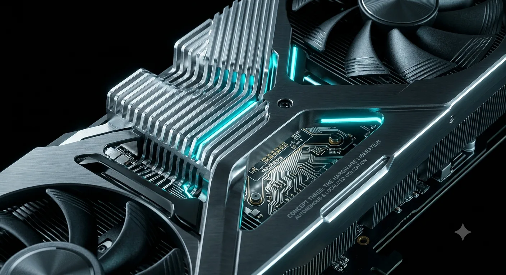

The AI Copium Bubble: Toll Booth Economy, Part II

Back in January, I wrote about The Toll Booth Economy, the slow replacement of ownership with managed access across housing, education, and the basic tools people need to function. A 1978 graduate could buy a house on a median salary. Today that ratio is fifteen-to-one, on top of £50,000 of debt before you've even started a career. The pattern was always the same: foundational things stopped being things you own and became things you rent, forever, from someone else.
AI is the same mechanism, now aimed at something even more foundational than housing or a degree: intelligence itself.
We are watching an exact repeat of the dot com crash, and the market is completely swimming in corporate copium. The stock prices of these massive tech monopolies are completely disconnected from reality. They are selling a story that they will rule the future forever, but beneath the surface, the foundation is cracking. The American tech giants are trapped in a cycle of severe overspending. They are burning through billions of dollars to chase the promise of Artificial General Intelligence.
The Utility Trap and the Open Source Rebellion
The biggest excuse keeping this bubble alive is the idea of utility. People refuse to believe the bubble will burst because they correctly recognize that AI is genuinely useful. But they are failing to learn the actual lesson of the dot com crash. The internet was incredibly useful too, and it changed human history, but that did not stop countless massive tech companies from going bankrupt overnight. Just because these current AI companies make good products today does not guarantee they will survive when the money dries up.
The current leaders are acting like monopolies trying to force a centralized subscription economy on us. They want every human on earth paying them a monthly toll just to access basic intelligence. But there are huge signs that the market is already rejecting this. Chinese AI models have effectively undercut the American market. They can do the exact same tasks for a fraction of the cost, often ten times cheaper. More importantly, AI power is rapidly moving toward the everyday person. The ability to run open source models directly on your own local computer is a massive threat to these companies. It proves we do not actually need their massive server farms.
Monopolies and the Illusion of Control
This is where the true ideological battle lies. Long before this current boom, I realized that if humanity ever builds a god level AI, it will create a hard line in the sand. You either adopt it or you get left behind permanently. Look at the concept of Neuralink. If someone gains the ability to directly upload intelligence to their brain, they will have a massive and unfair advantage over everyone else.
What we are witnessing right now is the very beginning of that shift. Yet instead of fighting for open access to this intelligence, algorithms have convinced many of my peers to reject the technology entirely. People look at the environmental destruction and corporate greed of American tech giants, and their immediate reaction is to just hate AI as a concept.
We have seen this exact playbook before with cryptocurrency. The traditional banking system and the government were terrified of regular people using decentralized money, you can see it directly in Operation Choke Point 2.0, the well documented pattern of regulators quietly leaning on banks to de-bank crypto exchanges and founders rather than banning the technology outright. Because they could not kill the technology, they just let the space become overrun by obvious scams and gambling. They let the public distrust grow to scare everyday people away. They made sure the masses would never trust crypto enough to actually replace traditional banks.
There's a version of this already forming with AI. Some of the same interests are pushing the argument that open source models, especially the Chinese ones currently undercutting them on price, are a national security risk that justifies restricting or banning their use. I'm not fully convinced by it. Banning Chinese open source models doesn't kill open source itself, it just means someone else, possibly here, builds the equivalent, and the government would be creating that exact market by forcing the issue. But even as a stalling tactic it works the same way the crypto play did: you don't need to kill the technology outright, you just need to slow it down long enough to protect the subscription model a little while longer. It's the same instinct behind how debt crises actually get handled, never resolved, just extended, refinanced, and delayed long enough that nobody currently in charge has to face an honest reckoning on their own watch.
They appear to be doing the exact same thing with AI, but the stakes are much higher. The ruling class does not need to sit in a secret room to conspire against the public. Their actions are driven by basic market mechanics. When tech monopolies realize that open AI could give everyday people the exact tools they need to educate themselves, build their own solutions, and bypass the system, they naturally move together to build a walled garden. Keeping the public dependent on their monthly subscriptions is just a highly profitable byproduct of their desire for total control. They know that if the masses adopt these tools, it threatens their entire business model.
The Algorithm Echo Chamber and the Creatives
That algorithm echo chamber, the digital groupthink convincing you to reject AI and retreat into traditionalism, actively hurts you. I completely understand why my peers judge my use of AI as a moral failure. I feel the exact same friction.
Refusing to use AI right now is like refusing to pull a camera out of your pocket because you insist on hand drawing a portrait of everyone you want to remember. I respect the traditional craft, but when you are trying to spread critical information, build new ideas, and actually reach the masses, efficiency is everything.
The real tragedy is that creative people, the exact people smart enough to break through the noise and wake the public up, are choosing to opt out. Open source AI will not magically fix the world overnight, and it comes with its own chaos, but resenting the tool instead of using it just guarantees a dystopian future. By sticking their heads in the sand and relying on paper posters, they are fighting a modern war with old weapons. By refusing to engage, you risk leaving the most powerful tools in history exclusively in the hands of the corporations you claim to hate.
This is the toll booth I've just described, and I am not exempt from paying it, whatever my politics say I should do.
I know I am walking a fine line here. I do not currently run open source AI on my own machine. I am waiting for the bubble to pop so I can buy the hardware to do it. In the meantime, I am using their cloud services. I am using the exact centralized tools I despise, and I wrestle with the reality that my usage contributes to the environmental damage these data centers cause. I am not claiming moral superiority.
But I justify it because I am weaponizing their own computers against them. I put so much effort into making these posts because it is my way of offsetting that damage. I am renting their servers to spread information and dismantle their narrative faster than I ever could on my own. I am preparing myself and my community for the moment we can break free from them entirely.
The same logic applies to my own app. I'm not interested in bolting AI onto it to inflate a number on a pitch deck, that's the exact grift I've just spent this whole piece pointing at in everyone else. I'm not planning to use AI inside the product itself for a long time, if ever, and even then it wouldn't be a headline feature. "If ever" is doing real work in that sentence, though, it's conditional on the app actually landing with real numbers, say a hundred thousand to a million users overnight. At that point the revenue exists to cover the API costs, and I'd probably implement it for one reason: to stop putting the burden of trick verification on the community itself. Even then, I'd likely keep the manual option alive alongside it, so people who aren't even skating still have something to do and a way to contribute. Either way, the AI stays almost inconsequential to the product, one narrow verification tool, not the thing the app is about.
The Hardware Lifespan Fallacy
The people selling copium love to compare this boom to the dot com bubble. They argue that even when that bubble burst, the fiber optic cables they laid down remained useful for decades. That is a completely false comparison. Fiber optics are passive cables buried in the ground. Modern AI data centers are the exact opposite. They are filled with graphics cards being pushed to their absolute thermal limits day and night. They burn out fast. The degradation of these servers is aggressive. The technology in these data centers is basically single use on a massive scale. It will become obsolete or physically break down way faster than these companies can make their money back.
The Great Rotation and My Capital Pivot
We are literally watching the early tremors of this collapse right now. Over the past few weeks, there has been a massive shift in the broader markets. Money is bleeding out of overvalued AI chip stocks and flowing back into safer historical assets and decentralized networks like crypto. The smart money realizes the AI hype story is running out of steam.
Watching these brutal corrections, specifically the absolute carnage happening right now in the Korean stock market as the KOSPI drops and massive AI chip suppliers like SK Hynix and Samsung take a hit, proved it was time to move.
That market shift matches my exact personal pivot. I officially pulled my money out of passive AI funds. Instead of waiting for an irrational tech bubble to burst and take my money with it, I am moving back into the active market. I am using my own trading strategies to control my money on my own terms.
The Hierarchy of a Crisis
There is an old economic saying about how value shifts during different market cycles. In a boom, assets are king. When a market crashes and credit dries up, cash is king. And when a crisis hits the whole system, food is king.

Right now, we are violently exiting the phase where inflated AI assets ruled. The entire silicon supply chain is currently distorted. Manufacturers have essentially abandoned the consumer market, redirecting all their factory capacity to build high margin enterprise chips and memory for these data centers.
But when investor money finally dries up and commercial AI companies collapse, that dynamic will violently reverse. Chipmakers will be left with massive amounts of prepaid factory time and no enterprise buyers, forcing them to flood the consumer market with affordable high end graphics cards to recoup their losses. On top of that, thousands of smaller startups will go bankrupt and dump their hoarded consumer cards onto the secondary market.
By pulling my money now, I am positioning myself to capitalize on that exact fallout. I am keeping a strategic portion of my money in cash so I can secure the digital equivalent of food, which is owning your own tangible utility. I am not trying to buy liquidated server racks. I am waiting for this broader market crash to force the supply chain to correct itself, flooding the market with local compute hardware. Investing in these centralized AI companies right now is just giving them money to burn. I refuse to be a casualty of their arrogance. I am going to step back, grow my own money elsewhere, and buy the necessary hardware to run my own open source models completely off grid when the dust settles.
Stay Dangerous,
DPD.
Just in case you're too prejudiced to take my word for it, here's someone else making the same case, independently;